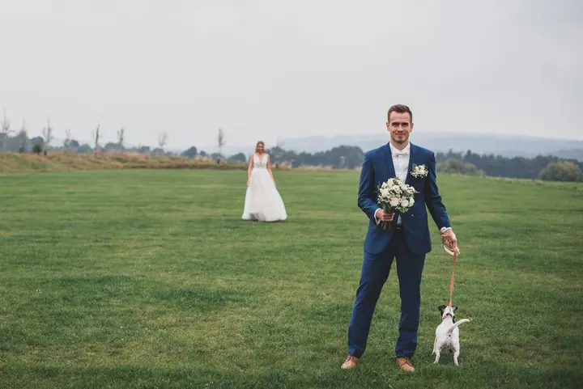
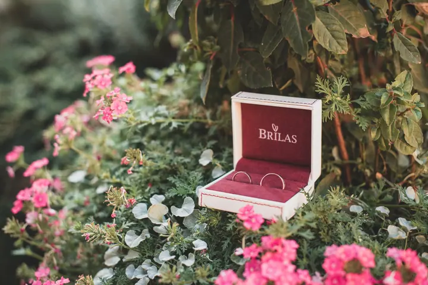
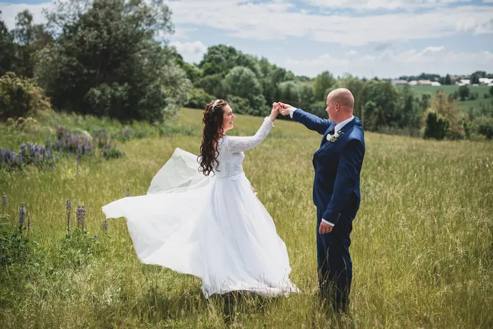
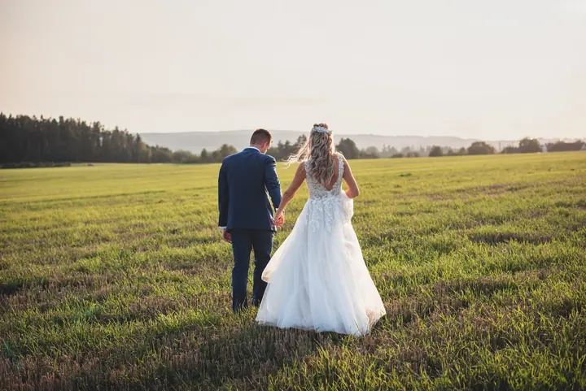

jedna
Svatební focení
Fotím všechny důležité okamžiky vašeho dne od příprav po poslední tanec, citlivě, nenápadně a s citem pro emoce. Obřad se skupinovými a novomanželskými portréty stojí 5 000 Kč, celodenní focení 18 000 Kč.

Svatební a rodinná fotografka · Olomouc, Přerov, Morava a Slezsko

Jmenuji se Magdalena Kočiščáková a jsem svatební fotografka z Kokor u Olomouce. Fotím přirozeně, citlivě a nenápadně, abyste měli krásné novomanželské portréty i opravdové momentky, které vám ve svatebním shonu možná uniknou.
Více o mně
Co fotím
jedna
Fotím všechny důležité okamžiky vašeho dne od příprav po poslední tanec, citlivě, nenápadně a s citem pro emoce. Obřad se skupinovými a novomanželskými portréty stojí 5 000 Kč, celodenní focení 18 000 Kč.
dvě
Užijeme si společnou procházku na krásném místě v okolí Olomouce, Přerova a Prostějova. Výsledkem budou fotky, na kterých jste konečně všichni, 10 upravených fotografií za 2 500 Kč.
tři
Těhotenské focení venku v přírodě nebo v ateliéru. Miminko vyfotím v ateliéru, u vás doma nebo přímo v porodnici.
Třídní fotografie, portréty dětí i tematické focení. Výběr fotografií i platbu řeším přímo s rodiči, takže škola nemusí řešit vybírání peněz ani administrativu.
Dojaté maminky, výbuchy smíchu a vlající sukně při tanci.


Za objektivem
Jsem fotografka s romantickou duší z Kokor u Olomouce, ale hlavně maminka tří dětí. Sama dobře vím, jak těžké je vyfotit vlastní rodinu a jakou cenu pak mají povedené společné snímky.
Na svatbách se snažím být nenápadnou pozorovatelkou, která zachytí všechny důležité okamžiky. Poradím si s portréty početné skupiny svatebčanů, vytvořím jedinečné novomanželské snímky a nezapomenu ani na fotku babiček či dětí. Nejvíc mě baví momentky: dojaté maminky s lesklýma očima, výbuchy smíchu nebo vlající sukně při divokém tanci.
Kromě svateb fotím rodiny, páry, těhotenství i novorozence, venku v přírodě, v ateliéru nebo u vás doma. Na podzim vyrážíme do barevné přírody a před Vánoci fotím v rustikálním ateliéru v Olomouci, ve Studiu 73 ve Velké Bystřici i mezi opravdovými stromky.
Magdalena
Napište mi nebo zavolejte, kdy a kde se budete brát. Ověřím volný termín a pošlu vám všechny potřebné informace.
Probereme průběh dne, vaše představy i místa pro novomanželské portréty, ať se v den svatby cítíte uvolněně.
Jsem s vámi tak dlouho, jak si vyberete, třeba od příprav po poslední tanec. Fotím nenápadně a portréty i skupinové fotky vedu klidně a v pohodě.
Fotky vám pošlu přes úschovnu ve dvou kvalitách, pro tisk i pro sociální sítě. Pro svatebčany připravím online galerii, ze které si stáhnou jen ty fotky, které chtějí.
Portfolio
Fotografie jsou ilustrační
Otázky
Svatby fotím na Moravě a ve Slezsku, hlavně v Olomouckém kraji, ale také ve Zlínském, Moravskoslezském a Jihomoravském kraji. Rodinné focení dělám v okolí Olomouce, Přerova a Prostějova.
Obřad se skupinovými a novomanželskými portréty stojí 5 000 Kč, celodenní svatební focení 18 000 Kč.
Hotové fotografie posílám přes úschovnu na váš e-mail, a to v plné kvalitě pro tisk i ve zmenšené pro web a sociální sítě. Navíc vytvořím online galerii, ze které si svatebčané stáhnou jen fotky, které chtějí.
V balíčcích tisk zahrnutý není, protože každý chce jiný počet fotek pro babičku nebo kamarádky. Můžeme se ale domluvit individuálně a nabízím také sestavení fotoknihy.

Napište pár vět o tom, co si představujete. · +420 720 459 552